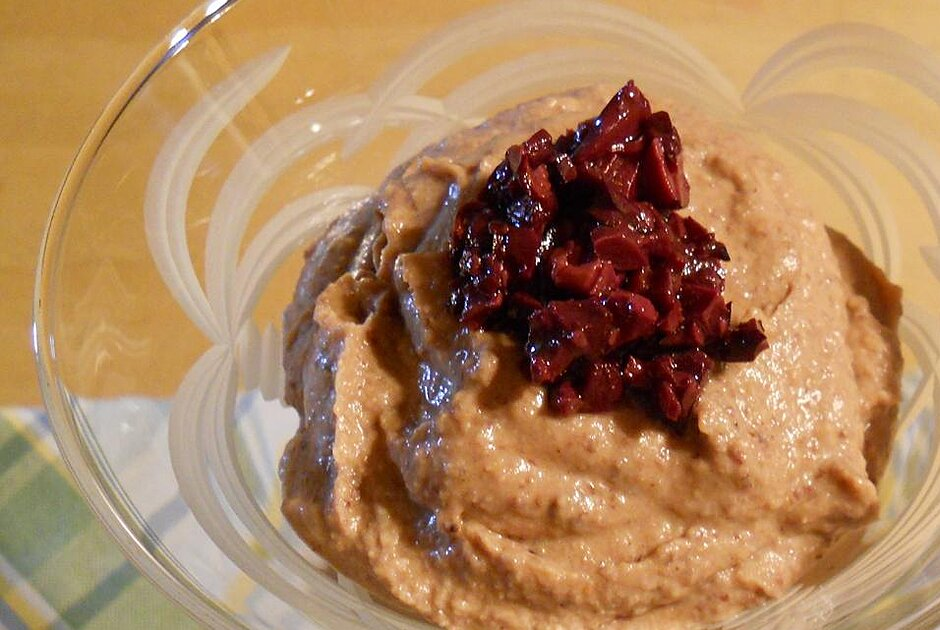

Black Bean Hummus

A Daniel Diet Favorite
Description:
This is the absolute best hummus recipe you will find on the internet
today. A true family favorite that will excite the senses.
Ingredients
- 1 clove garlic
- 1 (15 ounce) can black beans; drain and reserve liquid
- 2 tablespoons lemon juice
- 1½ tablespoons tahini
- ¾ teaspoon ground cumin
- ½ teaspoon salt
- ¼ teaspoon cayenne pepper
- ¼ teaspoon paprika
- 10 Greek olives
Directions:
- Mince garlic in the bowl of a food processor.
- Add black beans, 2 tablespoons reserved liquid, 2 tablespoons lemon juice, tahini, 1/2 teaspoon cumin, 1/2 teaspoon salt, and 1/8 teaspoon cayenne pepper; process until smooth, scraping down the sides as needed.
- Add additional seasoning and liquid to taste.
- Garnish with paprika and Greek olives.